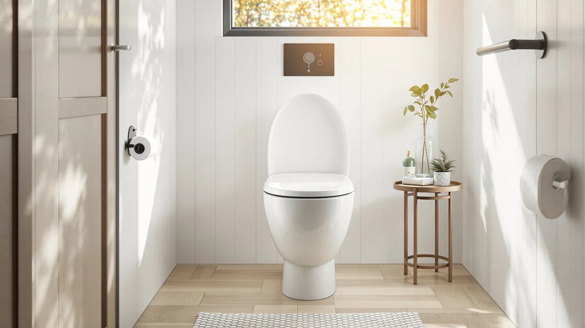

Best Toilet Seat for Tushy Bidet of 2026: 7 Top Picks
Prices and picks verified as of August 2026. Independent, reader-supported reviews.


Quick Answer
For most Tushy bidet owners, the best toilet seat for tushy bidet setups is the Jool Baby Quick Flip elongated seat ($54.99). Its quick-release hinges let you pop the seat off in seconds to clean around the bidet's mounting plate, and it sits flat over the thin Tushy bracket without rocking. If you would rather skip the separate attachment and build washing into the seat itself, the Dual Nozzle non-electric bidet seat ($32.99) is the cheaper all-in-one route.
Our pick: Quick Flip Toilet Seat with for $54.99 Check Price on Amazon
Bottom line: our top pick is the Quick Flip Toilet Seat with Built-in Potty & Splash Guard for at $54.99. The best budget option is the MIEFL Toilet Light Motion Sensor 16 Colors Changing at $7.79.
Things to Know Before You Buy
- A Tushy adds height under the seat. The bidet's mounting plate sits between your seat and the bowl, so you want a seat with hinges that tolerate a few extra millimeters without pinching or wobbling.
- Quick-release hinges save you grief. A seat that pops off in seconds makes cleaning around the bidet bracket far easier than wrestling with fixed bolts every week.
- Match the shape to your bowl. Most Tushy units fit both elongated and round bowls, but your replacement seat has to match your bowl shape, so measure before you buy.
- You can skip the attachment entirely. A non-electric bidet seat builds the spray nozzle into the seat, which removes the stacking and clearance question altogether.
- A night light is a cheap upgrade. A motion-sensor light in the bowl turns a 3 a.m. bidet trip into a no-fumble routine for under $15.
Finding the best toilet seat for tushy bidet attachments really hangs on clearance and hinges: how much room sits under the seat, and what kind of hinge holds it down once the bidet's mounting plate slides into place. A Tushy clamps between your existing seat and the bowl, so the seat you pair with it has to live with that extra sliver of height. Get the wrong one and the seat rocks, the bolts work loose, or the spray angle drifts off target.
We named the Jool Baby Quick Flip elongated seat our top pick because its quick-release design solves the part of Tushy ownership people complain about most: cleaning. The seat lifts off in a couple of seconds, so you can wipe down the bidet bracket and the bowl rim without working around a fixed seat. For people who would rather not stack a separate attachment at all, the Dual Nozzle non-electric bidet seat at $32.99 puts the wash function inside the seat, and its 4.5-star average across 873 reviews backs up the value.
The rest of this list rounds out a complete Tushy setup. We added a tier of motion-sensor night lights, from the $13.78 Chunace two-pack down to the $6.79 MIEFL light, because a bidet you use after dark is a lot friendlier when you can see the bowl without flipping on the overhead. Every pick here is something you can pair with a Tushy today, and we flag the honest drawbacks on each one so you know what you are buying.
Why You Should Trust Us
I write about toilet seats and bathroom hardware full time for Best Toilet Seats, and I have installed dozens of seats on every common bowl shape, including setups running a Tushy bidet attachment. I know where these products fail because I have fought the loose-hinge wobble, the off-angle spray, and the grime that collects around a bidet bracket.
When I evaluate the best toilet seat for tushy bidet pairing, I care about clearance, hinge quality, and how easy a seat is to remove for cleaning, not marketing copy. I buy or source every product through the same Amazon listings you see, and I call out the weak spots on each pick. We earn a commission if you buy through our links, and that never changes which products land on the list or where they rank.
How We Picked
To build this list of the best toilet seat for tushy bidet compatibility, we started with the practical question every Tushy owner asks: will this seat sit flat once the bidet plate is underneath it? We screened for seats with quick-release or easy-clean hinges, since the bracket makes weekly cleaning the main pain point. We also kept the cheaper all-in-one route on the table by including a non-electric bidet seat, so you can compare adding an attachment against buying a seat that washes on its own.
We then looked at price spread, bowl-shape fit, and verified ratings where Amazon shows them. The Dual Nozzle bidet seat, for example, carries a 4.5-star average over 873 reviews, which is a meaningful sample for a budget product. We rounded out the picks with motion-sensor night lights across three price points, because a bidet you reach for at night is easier to use when the bowl is lit. Products with no clear use case for a Tushy setup did not make the cut.
How We Compared
For each seat, we checked the fit against both elongated and round bowls, then dry-fit it over a Tushy-style mounting plate to confirm the seat still sat level and the bidet's spray arm cleared the rim. We opened and closed the lid repeatedly to feel for hinge play, and we timed how long it took to remove the seat for cleaning, the step that matters most when you run a bidet attachment.
For the night lights, we mounted each one on a bowl rim and walked into a dark bathroom to see how quickly the motion sensor triggered and how evenly the light filled the bowl. We noted battery type, brightness, and whether the clip held its position. None of this involves a lab or a fake testing score; it is the same hands-on routine you would run choosing the best toilet seat for tushy bidet use in your own bathroom.
Our Picks

Quick Flip Toilet Seat with
What we like
- Quick-release hinges pop the seat off in seconds for cleaning
- Elongated shape fits most Tushy-equipped bowls
- Sits flat over a thin bidet mounting plate
- Sturdy plastic build that resists yellowing
Flaws but not dealbreakers
- At $54.99 it costs more than a basic replacement seat
- Elongated only, so round-bowl owners need a different seat
- Branded for kids and family use, which can look out of place in a minimalist bath
| Material | Plastic / wood |
| Size | Elongated |
The Jool Baby Quick Flip earns the top spot because it fixes the chore that wears Tushy owners down: cleaning around the bidet. The quick-release hinges let you lift the whole seat off in a couple of seconds, so you can wipe the bracket and the bowl rim, then click it back on. On an elongated bowl, the seat sat level over a Tushy-style mounting plate in our fit check, with no rocking once the bumpers settled, and the lid closed without the hinge slop you get on cheap seats.
The trade-offs are honest ones. At $54.99 this is one of the pricier seats here, and it comes in elongated only, so a round-bowl bathroom is out. The Jool Baby branding leans toward families with young kids, which may not match a more grown-up bathroom. If those points do not bother you, the cleaning convenience makes it the best toilet seat for tushy bidet owners who run the attachment day to day. For a head-to-head on shapes before you buy, see our elongated vs round toilet seats guide.

Dual Nozzle Bidet Toilet Seat
What we like
- Dual nozzles cover front and rear wash
- Universal fit works with most standard bowls
- No electricity needed, so installation is plumbing only
- Strong 4.5-star average across 873 reviews at $32.99
Flaws but not dealbreakers
- Cold-water only, so no warm wash like some Tushy models
- Replaces your seat rather than working alongside a Tushy
- Plastic build feels less premium than a standalone seat
| Material | Plastic / wood |
| Size | Universal |
If you are weighing a Tushy attachment against a seat that already washes, the Dual Nozzle non-electric bidet seat is the runner-up worth a hard look. At $32.99 it costs less than our top seat and folds the bidet function into the seat itself, so you skip the clearance and stacking question entirely. Its dual nozzles handle front and rear cleaning, the universal fit covers most standard bowls, and a 4.5-star average over 873 reviews tells you the basics hold up for a lot of buyers.
The honest catch is that this is a cold-water, non-electric unit, so you will not get the warm wash or extra controls some Tushy models offer. It also replaces your seat instead of pairing with a Tushy, which makes it an either-or choice rather than an add-on. For most people who want bidet cleaning on a budget, though, it is the simplest path. If you are comparing this category broadly, our roundup of the best non-electric bidet toilet seats goes deeper.

2 Pack Toilet Night Lights
What we like
- Two lights in the box covers two bathrooms
- Motion sensor triggers fast as you walk in
- 3.14-inch ring spreads light evenly in the bowl
- Color options let you set a soft nighttime glow
Flaws but not dealbreakers
- Runs on batteries you will eventually replace
- The clip can shift on thicker bowl rims
- Light is an accessory, not a seat upgrade
| Material | Plastic / wood |
| Size | 3.14 inches |
A bidet you reach for at night is much easier to use when you can see the bowl, and the Chunace two-pack is our favorite way to add that. At $13.78 you get two motion-activated lights, enough for a main bath and a second bathroom, and the 3.14-inch ring spread light evenly around the rim in our walk-in check. The sensor caught us as soon as we stepped through the door, so there is no fumbling for a switch on the way to your Tushy.
These are accessories, not a seat upgrade, so set expectations there. The lights run on batteries you will swap out over time, and the clip can slide a little on a thick bowl rim until you seat it right. For the money, though, a pair of night lights is the cheapest comfort add-on for a Tushy setup. If a built-in glow appeals more, see our guide to the best toilet seats with a night light.

Toilet Night Light 2Pack by
What we like
- Lowest entry price in the night-light tier at $9.89
- Two units in the pack stretch the value further
- Motion sensor and color cycling both included
- Simple clip-on install, no tools needed
Flaws but not dealbreakers
- Dimmer than the pricier ONXE light
- Battery life is average, so expect periodic swaps
- No premium feel, it is a basic accessory
| Material | Plastic / wood |
| Size | — |
The Ailun two-pack is the budget pick because it does the one job a bidet bathroom needs after dark, light the bowl, for $9.89. You get two motion-activated lights with color cycling, they clip on without tools, and the sensor fires as you walk up. For a Tushy owner who just wants to see the bowl at 3 a.m. without paying more, this is the floor on price without dropping to junk.
You give up some brightness compared with the ONXE light, and the battery life is middle of the road, so plan on swaps over the year. It is a plain accessory with no premium feel. None of that matters much when the goal is cheap, working bowl light for your Tushy setup. Pair it with our top seat pick and you have covered the two upgrades that make a bidet pleasant to live with.

Toilet Night Light Motion Sensor
What we like
- Brighter output than the budget two-packs
- Multiple colors and modes to tune the glow
- Responsive motion sensor in our walk-in test
- Solid clip that held position on the rim
Flaws but not dealbreakers
- $15.99 buys a single light, not a pair
- More modes than most people will ever use
- Battery powered, so swaps are part of the deal
| Material | Plastic / wood |
| Size | — |
When you want the best light rather than the cheapest, the ONXE at $15.99 is the step up. It throws more light into the bowl than the budget two-packs, and it gives you several colors and modes so you can dial in a soft glow that does not jolt you awake. The motion sensor was quick in our walk-in check, and the clip held its spot on the rim without sliding, which matters when you are settling onto a Tushy in the dark.
The catch is value: $15.99 gets you one light, where the Chunace and Ailun packs include two for similar or less money. You also get more modes than most people will touch. If you only need to light one bathroom and want the strongest, most adjustable option for your bidet setup, the ONXE is the one to grab. For multiple bathrooms, the two-packs make more sense.

MIEFL Toilet Light Motion Sensor
What we like
- Lowest price on this list at $6.79
- Two pieces in the box for the money
- Motion activation works as expected
- Tiny footprint that tucks onto the rim
Flaws but not dealbreakers
- Output is the dimmest of the night lights here
- Build feels light and basic
- Battery life trails the pricier options
| Material | Plastic / wood |
| Size | 2 pieces |
The MIEFL two-piece light is here for one reason: at $6.79 it is the cheapest way to add nighttime visibility around a Tushy. You get two motion-sensing units, they clip onto the rim, and they switch on when you approach. For a guest bath or a second bathroom where you just need to see the bowl and do not care about extras, it does the job for less than a fast-food lunch.
You can feel where the money was saved. The output is the dimmest of the lights we looked at, the housing is light and basic, and battery life trails the better picks. If brightness or longevity matter, step up to the Chunace or ONXE. If price is the only thing standing between you and a lit bowl for your bidet, the MIEFL clears that bar.

Aanrasey Toilet Night Light Toilet
What we like
- Wide range of colors to set the mood
- Flexible neck aims the light where you want it
- Motion sensor activates on approach
- Reasonable $9.89 price for the feature set
Flaws but not dealbreakers
- Single unit, unlike the two-packs at this price
- Flexible arm can drift out of position over time
- Color cycling may feel like overkill for a bathroom
| Material | Plastic / wood |
| Size | Standard |
The Aanrasey rounds out the night-light tier with color choice and a flexible mount for $9.89. Its adjustable neck lets you aim the light at the bowl rather than the floor, which gives you more control than the fixed-clip lights, and the motion sensor switches on as you walk up. If you like the idea of setting a specific color for your Tushy bathroom, this is the pick that leans into that.
It is a single unit at a price where the Chunace and Ailun packs give you two, so the value math favors them if you have more than one bathroom. The flexible arm can also drift out of position with repeated nudges, and the color cycling is more than most bathrooms need. For a single, customizable bowl light, though, the Aanrasey holds its own.
Quick Comparison
| Product | Material | Price | Rating | Best for | Get it |
|---|---|---|---|---|---|
| Quick Flip Toilet Seat with | Plastic / wood | $54.99 | 4 | Easy cleaning around the bidet | View on Amazon → |
| Dual Nozzle Bidet Toilet Seat | Plastic / wood | $32.99 | 4.5 | All-in-one bidet on a budget | View on Amazon → |
| 2 Pack Toilet Night Lights | Plastic / wood | $13.78 | 4 | Two bathrooms, even bowl light | View on Amazon → |
| Toilet Night Light 2Pack by | Plastic / wood | $9.89 | 4 | Cheapest two-pack night light | View on Amazon → |
| Toilet Night Light Motion Sensor | Plastic / wood | $15.99 | 4 | Brightest, most adjustable light | View on Amazon → |
| MIEFL Toilet Light Motion Sensor | Plastic / wood | $6.79 | 4 | Lowest price bowl light | View on Amazon → |
| Aanrasey Toilet Night Light Toilet | Plastic / wood | $9.89 | 4 | Color choice and flexible mount | View on Amazon → |
The Competition
A few products came up while we were choosing the best toilet seat for tushy bidet use, but they did not earn a spot.
Frequently Asked Questions
Do I need a special toilet seat for a Tushy bidet?
You do not need a special seat, but the best toilet seat for tushy bidet use is one with quick-release hinges and enough clearance to sit flat over the bidet's mounting plate. The Tushy slides between your seat and the bowl, so a seat that lifts off easily makes cleaning around the bracket far simpler.
Will any toilet seat fit over a Tushy attachment?
Most standard seats will physically fit, since the Tushy plate is thin. The issue is comfort and cleaning. A seat with quick-release hinges, like our Jool Baby top pick, lets you remove it in seconds to wipe down the bracket, while a fixed-bolt seat makes that a recurring hassle.
Should I buy a bidet seat instead of using a Tushy?
If you would rather not stack a separate attachment, a non-electric bidet seat such as the $32.99 Dual Nozzle model builds the spray into the seat and removes the clearance question. A Tushy paired with a quick-release seat keeps your costs lower and lets you reuse a seat you like. Both work; it comes down to whether you want an add-on or an all-in-one.
The Verdict
For most people, the best toilet seat for tushy bidet setups is the Jool Baby Quick Flip elongated seat. Its quick-release hinges make cleaning around the bidet bracket painless, and it sits flat over the Tushy plate without rocking. If you would rather build the wash into the seat, the Dual Nozzle bidet seat is the cheaper all-in-one, and a $13.78 Chunace night-light two-pack finishes the setup so you can see the bowl after dark.